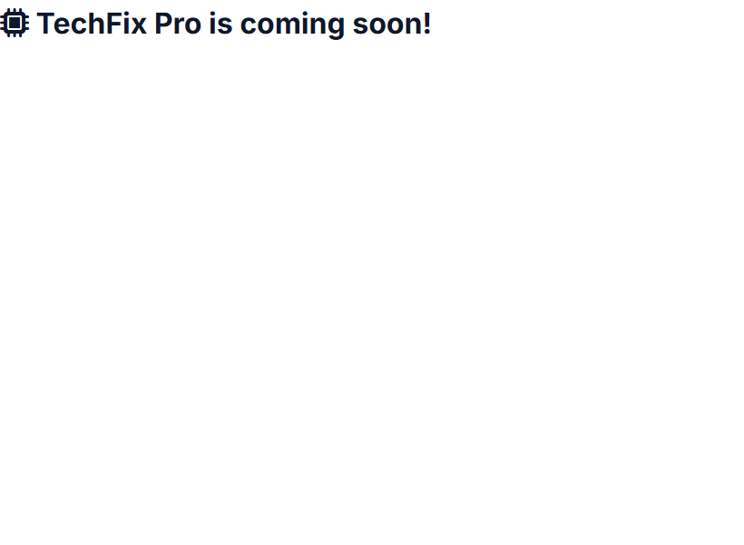

Lesson 5 · Shared Styles & Layout
The Design System: Colours, Fonts & Resets
Professional websites define their colours, shadows and corner sizes once, as named values, and reuse them everywhere. In this lesson you will write the foundation of styles.css that every page of TechFix Pro depends on.
- About 40 minutes
- Edits:
styles.css
By the end of this lesson you will be able to
- Create and use CSS custom properties (variables) with
var(). - Explain what a CSS reset does and why
box-sizing: border-boxmatters. - Set the font for the whole site.
- Build a centred
.containerthat keeps content at a comfortable width.
Add the colour and style variables
Open styles.css. Below the heading comment, add:
styles.css:root {
--primary: #2563eb;
--primary-dark: #1d4ed8;
--primary-light: #3b82f6;
--secondary: #0f172a;
--accent: #f59e0b;
--accent-light: #fbbf24;
--light: #f8fafc;
--gray: #64748b;
--gray-light: #94a3b8;
--dark-gray: #334155;
--white: #ffffff;
--border: #e2e8f0;
--shadow-sm: 0 1px 2px rgba(0,0,0,0.05);
--shadow: 0 4px 6px -1px rgba(0,0,0,0.1), 0 2px 4px -1px rgba(0,0,0,0.06);
--shadow-md: 0 10px 15px -3px rgba(0,0,0,0.1), 0 4px 6px -2px rgba(0,0,0,0.05);
--shadow-lg: 0 20px 25px -5px rgba(0,0,0,0.1), 0 10px 10px -5px rgba(0,0,0,0.04);
--radius-sm: 8px;
--radius: 12px;
--radius-lg: 16px;
--radius-xl: 24px;
--transition: all 0.3s cubic-bezier(0.4, 0, 0.2, 1);
}Each line creates a CSS custom property (a “variable”): a name starting with two hyphens, and a value. They live inside :root, which means the whole page can use them.
| Group | Variables | Used for |
|---|---|---|
| Brand colours | --primary , --primary-dark, --primary-light, --accent | Buttons, links, icons, highlights |
| Neutrals | --secondary (near-black navy), --gray, --light, --white, --border | Text, backgrounds, borders |
| Shadows | --shadow-sm … --shadow-lg | Soft “lifted” effect on cards |
| Radius | --radius-sm (8px) … --radius-xl (24px) | Rounded corners |
| Motion | --transition | How smoothly hover effects animate |
To use a variable, write var(--name) as a value. For example color: var(--primary); means “use the brand blue”.
Why bother with variables?
The brand blue appears in over 40 places on the site. If the owner wants green instead, you change one line (--primary) and the entire site updates. Try it at the end of this lesson!
Add the reset and base styles
Add this below the :root block:
:root { … } block* { margin: 0; padding: 0; box-sizing: border-box; }
html { scroll-behavior: smooth; }
body {
font-family: 'Inter', -apple-system, BlinkMacSystemFont, 'Segoe UI', Roboto, sans-serif;
color: var(--secondary);
line-height: 1.6;
background: var(--white);
overflow-x: hidden;
}
img { max-width: 100%; display: block; }
a { text-decoration: none; color: inherit; }Line by line:
* { margin: 0; padding: 0; box-sizing: border-box; }— the reset. Browsers add their own default margins to headings, paragraphs and lists; this removes them all so you are in control.box-sizing: border-boxmakeswidthinclude padding and border (remember the box model from Lesson 3).scroll-behavior: smooth— links that jump to a part of the page will glide there smoothly.body— sets the Inter font (with fallbacks in case it fails to load), the default text colour, comfortableline-height(1.6 × the font size), and a white background.overflow-x: hiddenstops the page from scrolling sideways if something pokes out of the edge.img { max-width: 100%; display: block; }— images never grow wider than their container, which is the first step to a mobile-friendly site.a { text-decoration: none; color: inherit; }— removes the default blue underline from links; they take the colour of the text around them instead.
Add the container
Add this below the reset:
.container {
max-width: 1200px;
margin: 0 auto;
padding: 0 1.5rem;
}Almost every section of TechFix Pro wraps its content in <div class="container">. The container:
- is never wider than 1200px (
max-width), so lines of text never get uncomfortably long on huge screens; - is centred with
margin: 0 auto(0 top/bottom, “automatic” equal left/right); - has
1.5remof padding on the left and right so text never touches the screen edge on a phone.
Check the result
Save styles.css and look at your Home page. The test heading should now be in the Inter font, in dark navy, and touching the top-left corner (because the reset removed the default margins).

New terms
Custom property / CSS variable — a named, reusable value: --primary: #2563eb;, used with var(--primary).
Reset — CSS that removes the browser's default styling so you start from a clean slate.
Fallback font — a font the browser uses if the first choice is not available.
Checkpoint
Common mistakes
- Variables don't work: a custom property needs two hyphens:
--primary, andvar(--primary)— notvar(primary)orvar(-primary). - The font didn't change: check the Google Fonts
<link>in the<head>and that'Inter'is spelled with a capital I inside quotes.
Try it: change the brand
Temporarily change --secondary: #0f172a; to --secondary: #dc2626; and save. The heading turns red, because body uses var(--secondary) for its text colour. Change it back before moving on!